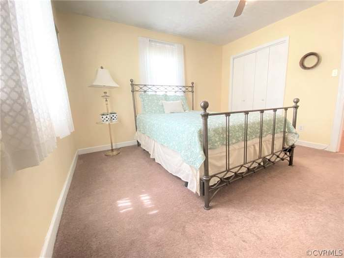
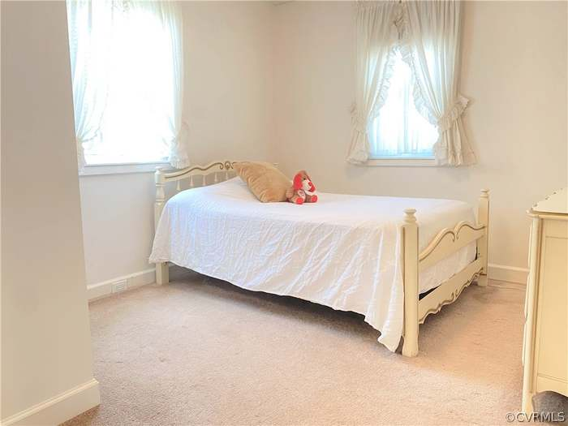

Purchase State


Target
Master Bedroom + First Bedroom → Master Suite
Open/remove the dividing wall as structurally feasible while retaining the existing master closet unless the design later changes.
Target plan: merge the original Master Bedroom and First Bedroom into one larger master suite.


Open/remove the dividing wall as structurally feasible while retaining the existing master closet unless the design later changes.